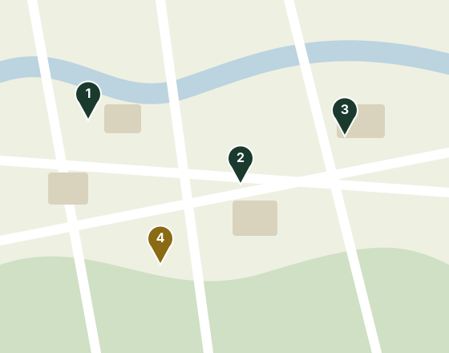

A reciclagem começa na sua rua
O Reciclê Bairro mapeia pontos de coleta seletiva e conecta moradores às cooperativas de catadores da região, fortalecendo a renda de quem vive da reciclagem.

Um problema que ainda é do bairro
Baixa adesão à coleta seletiva
Grande parte do material reciclável ainda vai para o lixo comum por falta de informação sobre onde descartar.
Catadores invisibilizados
Cooperativas de catadores fazem um trabalho essencial, mas raramente têm visibilidade ou apoio direto da comunidade.
Falta de um mapa único
Pontos de coleta espalhados e sem divulgação dificultam que o morador saiba para onde levar cada material.
A reciclagem no Brasil ainda é pequena
- 8,7%do lixo urbano foi enviado à reciclagem em 2024
- 2/3do material reciclado chega pelo trabalho dos catadores
- 40,3%do lixo ainda vai para lixões e destinos irregulares
Fonte: Abrema, Panorama dos Resíduos Sólidos no Brasil 2025 (ano-base 2024).
O Reciclê Bairro contribui para os ODS 8, 11 e 12 da ONU: renda digna para catadores, cidades mais limpas e consumo responsável.
Acessibilidade em primeiro lugar
Este site foi pensado para ser navegável por todas as pessoas, incluindo quem usa leitor de tela ou navega apenas pelo teclado.
- Contraste adequado entre texto e fundo
- Navegação completa por teclado, com foco visível
- Estrutura semântica compatível com leitores de tela